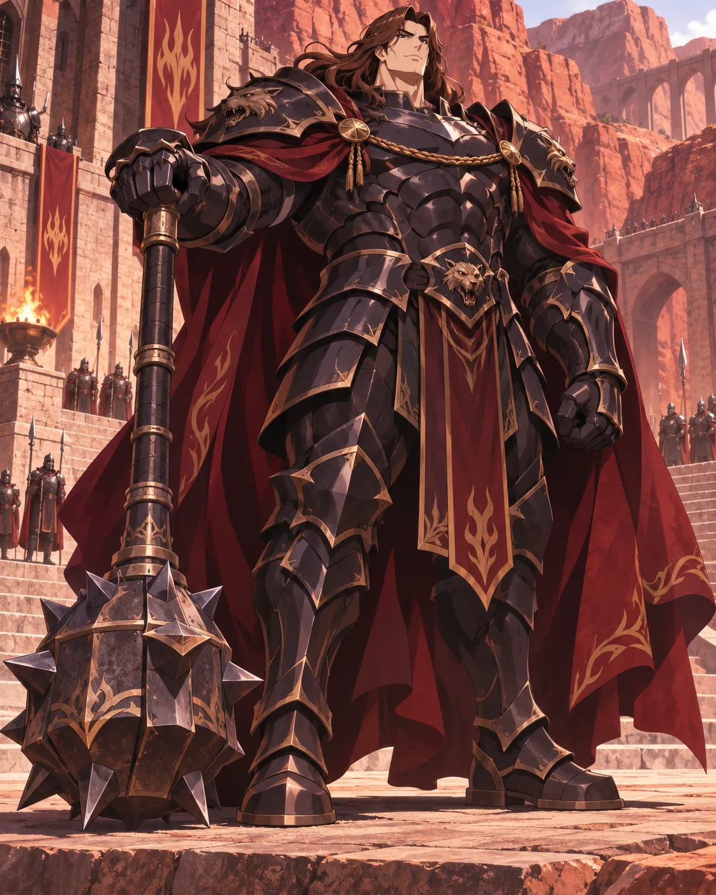
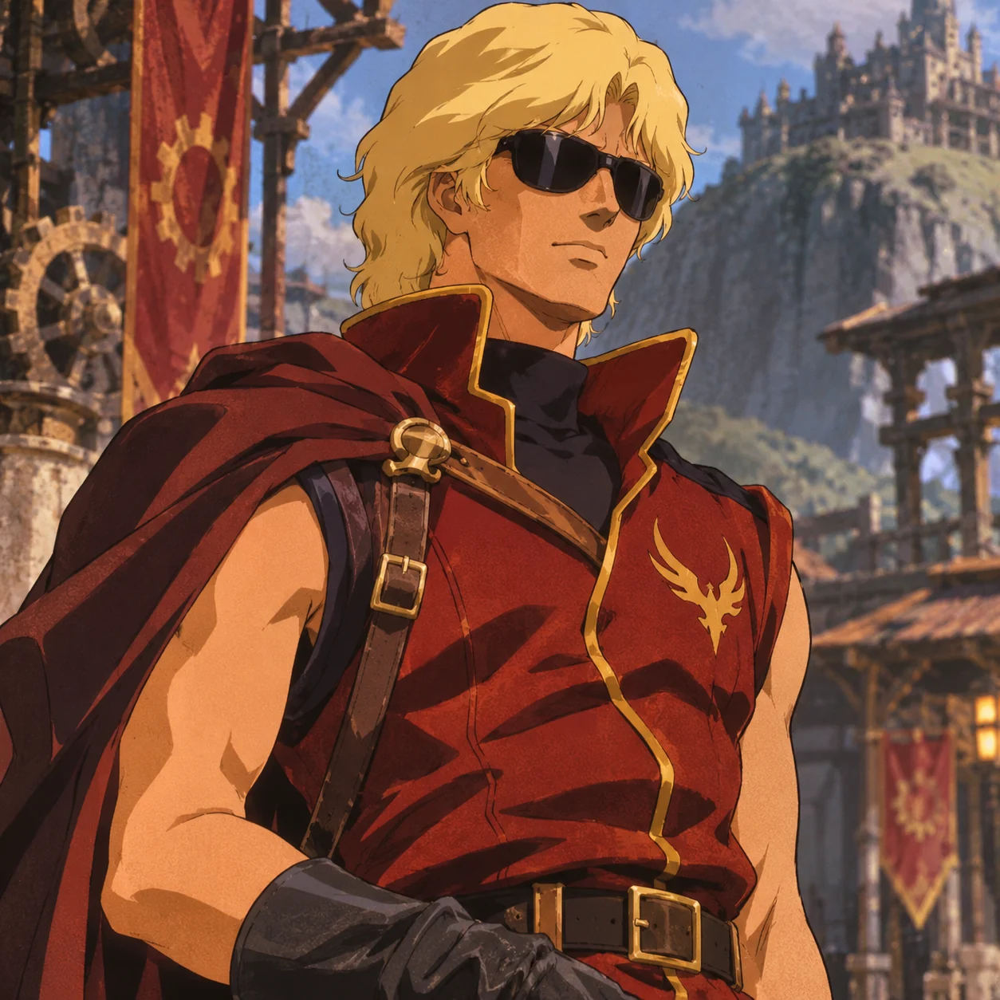
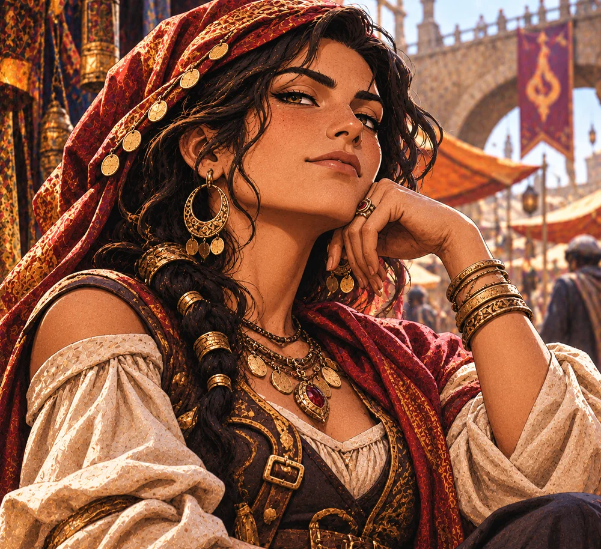
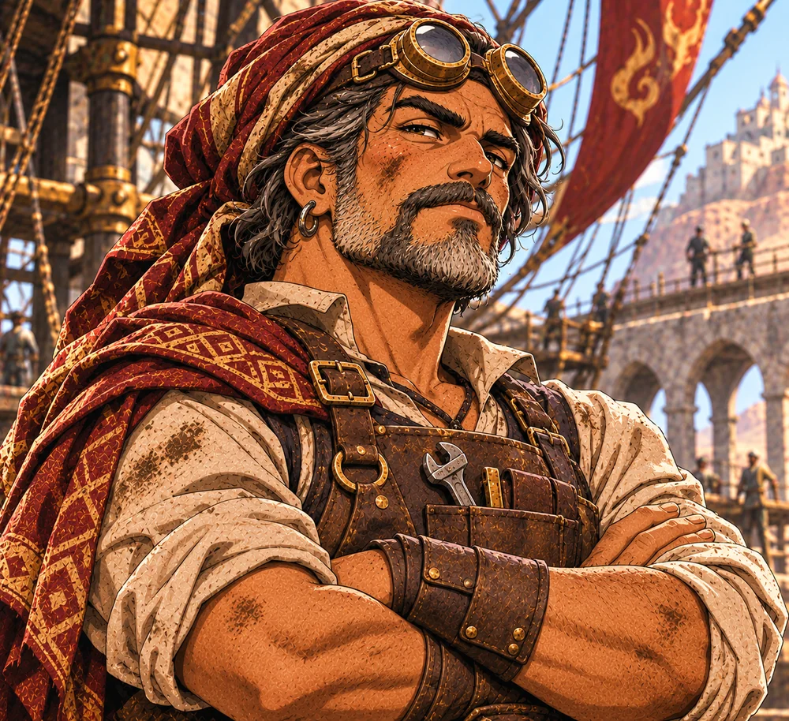
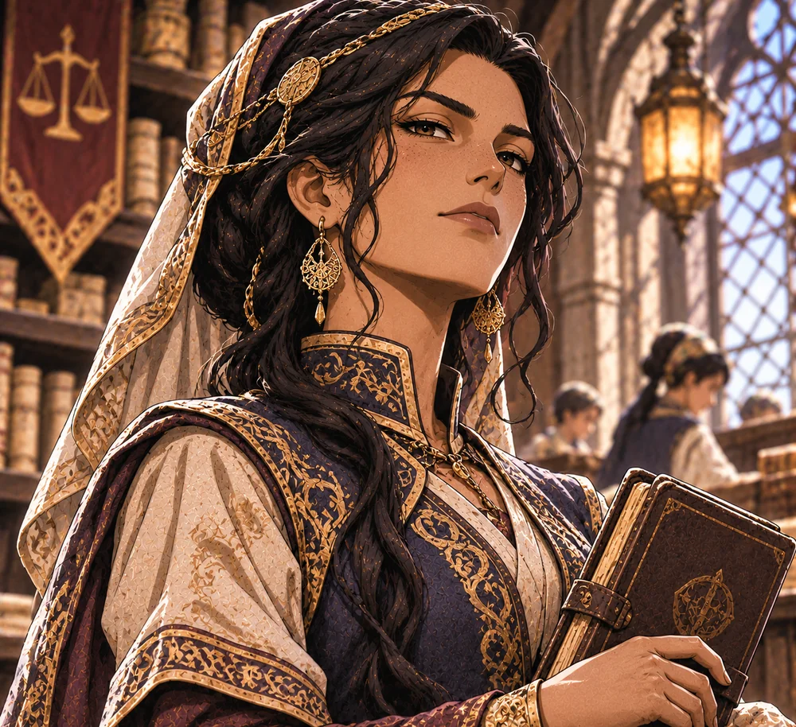
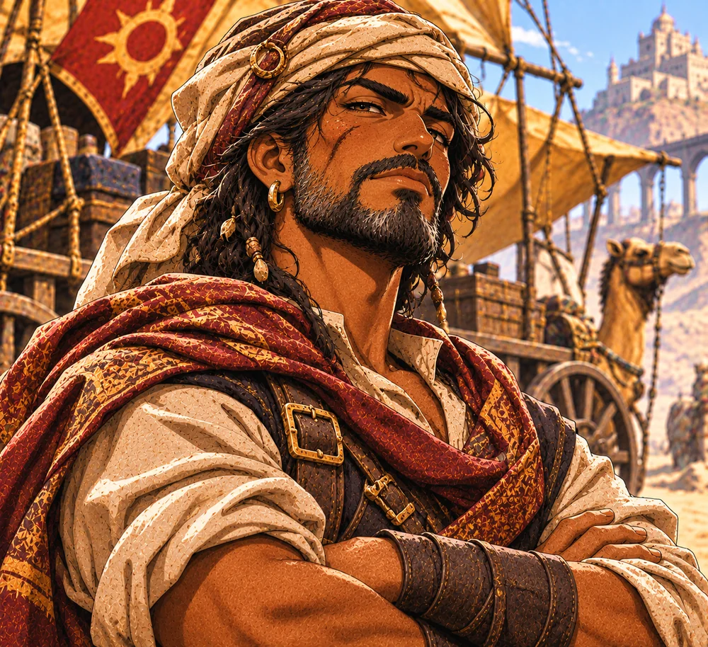
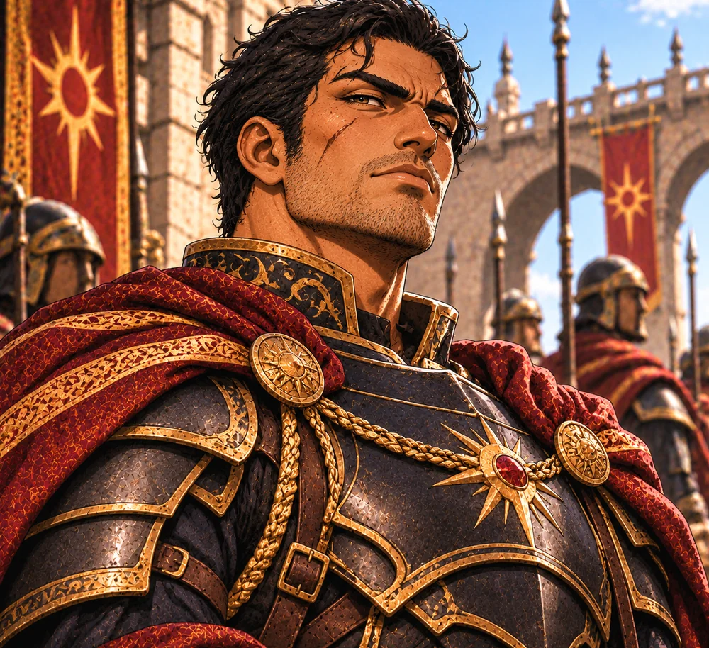
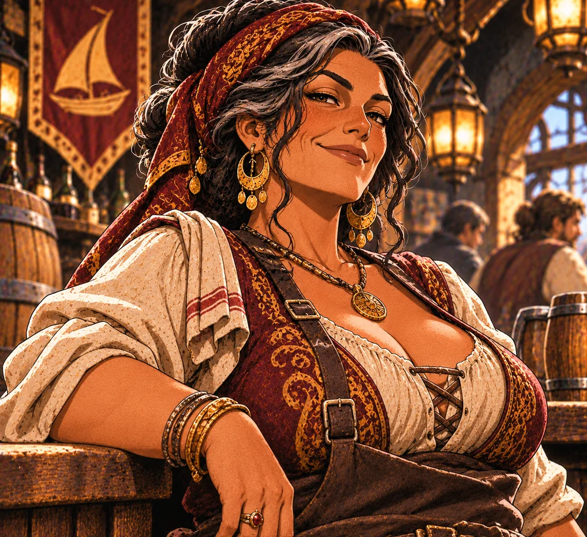

Gruppo 1 · Avventura 18 · Ciclo del principe
Ironcross — Il Mastino di Shade
Bozza 0.2 · Ellan — Luce e Ombra · Hotland
1. Arrivo a Ironcross
Da leggere ai giocatori
La strada si solleva sopra una distesa di terra rossastra. Il calore tremola nell'aria sotto le ruote dei carri. Davanti a voi, Ironcross occupa la sommità di un immenso altopiano: arcate, terrazze e file di veicoli a vela si intrecciano verso il mercato.
All'ingresso, i conducenti mostrano registri e indicano il contenuto dei carichi. Un soldato si sofferma su un viaggiatore, gli chiede di scoprire il volto e poi lo lascia passare. Dietro di voi la fila si allunga. Tocca a voi.
Chiedi ai giocatori: con quale copertura vi presentate? Chi parla ai controlli? Dove tenete Ryan? Lascia spazio a soluzioni alternative e non imporre una prova se il piano è coerente.
2. Il Mastino nella folla
Da leggere ai giocatori, quando emerge la presenza di Lucifer
Nel bazar, le contrattazioni si interrompono a ondate. Alcuni mercanti abbassano lo sguardo. Fra le guardie avanza un uomo gigantesco in armatura scura, con lunghi capelli castani e un'espressione quasi cordiale. Si ferma ad ascoltare un ufficiale, sorride appena e riprende a camminare. Nessuno osa sbarrargli la strada.
Per il Master: Lucifer è in città, ma non ha riconosciuto automaticamente Ryan. Usa questa scena per far percepire la minaccia, non per forzare un arresto.
Premessa e obiettivo
Dopo Horgon, i quattro PG viaggiano con Ryan Stormblade, erede al trono di Yatandra, e Tobia Varo, chierico di Alidor. Devono entrare in incognito a Ironcross e contattare Olidan Knife, mercenario che ha inviato loro un messaggio: possiede informazioni su Deravos, che intende vendere.
Rivelazione di Olidan: un elfo chiamato Deravos, considerato molto potente e folle, abita in un castello a Lunare. Olidan non conosce necessariamente la sua natura di Primario. Lunare sarà una meta successiva, non il luogo di questa avventura.
Contesto fedele al gazzettino
Ironcross è il centro della distribuzione delle merci di Hotland, su un altopiano rossastro e lungo la direttrice sopraelevata che collega Ponteverde, Ironcross e Shinestar. La Corporazione dei Mercanti, istituita da Shade Hellbells, gestisce il commercio all'ingrosso e le officine dei carri a vela. Registri, carichi, convogli, officine e controlli offrono occasioni credibili per coperture e sorveglianza. Il terreno circostante è pericolosamente caldo.
Antagonista: Lucifer Forter
Lucifer Forter è personalmente a Ironcross. È il comandante operativo della Guardia Reale di Hotland, il Mastino di Shade e fratello di sangue del dittatore. Ha ricevuto indizi incompleti che suggeriscono la presenza dell'erede di Yatandra a Hotland: sospetta, ma non sa con certezza che Ryan sia in città. Vuole catturarlo vivo per dare a Shade una potente leva diplomatica su Yatandra. Dispone di guardie fedeli, intelligenza tattica e accesso ai controlli cittadini; non è un semplice bruto. Il riconoscimento di Ryan non è inevitabile: le scelte dei PG determinano quanto Lucifer scopre e quanto aggressiva diventa la caccia.
Scaletta in tre atti
- Ingresso sotto copertura. I PG scelgono identità e strategia (per esempio mercanti o personale di una carovana). Ryan deve evitare di usare il titolo. Presentare la città, i controlli commerciali e la presenza inquietante della Guardia Reale. Possibile scena: Lucifer attraversa il bazar con i suoi uomini, e la folla ammutolisce; non ha ancora riconosciuto il gruppo.
- Contatto con Olidan. I PG cercano il mercenario attraverso mercati, officine, conoscenze e contatti. Olidan è diffidente e pragmatico, non una spia professionista. Vende l'informazione su Deravos a un prezzo da concordare in gioco. Il contratto per le informazioni è distinto da ogni altro incarico. Dopo l'accordo mantiene la parola data.
- Fuga verso Ponteverde. La pressione dei controlli cresce in modo proporzionato agli indizi lasciati. Ponteverde è una tappa obbligata per fuggire da Hotland verso sud; il tragitto può coinvolgere grandi carri a vela, officine, convogli e strade sopraelevate. Il finale è variabile: fuga discreta se i PG hanno agito con prudenza, oppure inseguimento e caccia serrata se Lucifer ha identificato Ryan.
Offerta facoltativa di Olidan
Oltre al prezzo delle informazioni, Olidan può proporre un secondo contratto a pagamento: creare un diversivo per alleggerire i controlli e aiutare il gruppo a uscire da Ironcross. Un esempio possibile, non obbligatorio, è un falso incidente spettacolare ma non letale presso le officine dei carri a vela, per attirare altrove le guardie. Olidan promette l'esecuzione del diversivo concordato, non il successo garantito della fuga. Se comprende che è coinvolto Lucifer, potrebbe chiedere di più. Eventualmente i PG possono negoziare un terzo incarico: la sua scorta fino a Ponteverde, a prezzo maggiore. Nessun servizio è obbligatorio; i PG possono escogitare un piano proprio.
Ironcross: luoghi da giocare (proposte)
Questi nomi di quartieri e attività sono nuove proposte per l'avventura, non toponimi già stabiliti nel gazzettino. Si appoggiano alla geografia canonica: altopiano rossastro, bazar, snodo dei convogli, officine dei carri a vela, strade sopraelevate e sede della Corporazione dei Mercanti.
- La Porta delle Vele: area di accesso dei convogli dalla direttrice di Ponteverde; controlli sui carichi e sulle identità, code, conducenti e facchini. Ottima per entrare con una copertura commerciale e per misurare l'intensità della sorveglianza.
- Il Bazar delle Tre Strade: mercato rumoroso dove si incontrano mercanti, carovanieri e intermediari; luogo per acquistare informazioni e percepire la presenza della Guardia Reale. Nessuno qui parla gratuitamente.
- Le Officine del Vento Caldo: officine della Corporazione dedicate ai carri a vela, tra vele, otri, ruote cave e riparazioni. Possibile luogo di accesso a un convoglio o di diversivo non letale.
- La Casa dei Registri: uffici della Corporazione dove si annotano carichi, destinazioni e transiti. Può aiutare a costruire una copertura o diventare fonte di sospetti se i documenti non tornano.
- Il Cortile delle Cisterne: spazio di sosta e rifornimento presso il quartiere dei viaggiatori; un punto d'incontro plausibile per contatti discreti, ma non privo di occhi indiscreti.
- La Terrazza Rossa: zona sopraelevata con vista sulle vie di accesso e sui convogli in uscita; utile per osservare i posti di blocco e pianificare la fuga.
PNG secondari e contatti possibili (proposte)
Non tutti devono apparire. Ogni PNG offre un diverso approccio alla ricerca di Olidan e può diventare utile o pericoloso secondo le scelte dei PG.
- Mira Saldan — sensale del Bazar delle Tre Strade. Conosce i mercenari che lavorano sulle carovane. Può indicare dove lasciare un messaggio per Olidan in cambio di denaro o di un favore. Non sa chi sia Ryan e preferisce non fare domande.
- Beltran Voss — capofficina alle Officine del Vento Caldo. Pratico, burbero, preoccupato per la sicurezza dei lavoratori. Ha già avuto a che fare con Olidan per la protezione dei carichi. Può suggerire un passaggio su un carro a vela o collaborare a un diversivo, purché nessuno dei suoi operai rischi la vita.
- Neria Tal — impiegata della Casa dei Registri. Attenta ai dettagli e poco incline a esporsi. Può verificare l'esistenza di un convoglio verso Ponteverde o aiutare a ottenere documenti commerciali credibili. Se i PG la mettono in pericolo, può interrompere il contatto.
- Rasko Den — carovaniere al Cortile delle Cisterne. Ha una partenza prevista per Ponteverde e conosce percorsi, soste e controlli. Può offrire un passaggio a pagamento; la sua disponibilità diminuisce se scopre che la Guardia Reale cerca i passeggeri.
- Capitano Darek Moln — ufficiale della Guardia Reale. Subordinato di Lucifer, coordina verifiche e pattuglie a Ironcross. Non conosce automaticamente l'identità di Ryan: raccoglie descrizioni, incrocia registri e interroga testimoni. È il volto ricorrente della pressione crescente.
- Sela Brin — locandiera presso il Bazar. Gestisce la locanda proposta La Vela Piegata, frequentata da viaggiatori e lavoratori dei convogli. Sa riconoscere i clienti che cercano di non farsi notare. Può offrire discrezione, ma non rischierà la locanda senza una ragione concreta.
Rete degli indizi: nessun percorso obbligato
- Trovare Olidan: Mira conosce un canale per inviargli un messaggio; Beltran può confermare che lavora nella zona; Sela può riconoscere il nome e indicare un luogo d'incontro plausibile. Sono alternative, non tappe in sequenza.
- Preparare la fuga: Rasko può proporre un convoglio, Neria può fornire informazioni sui transiti, Beltran conosce le officine. Olidan può offrire un diversivo con un contratto separato.
- Capire il pericolo: Darek intensifica i controlli quando emergono indizi; al bazar circolano voci sull'arrivo di Lucifer. La presenza del comandante va mostrata prima che sia una minaccia diretta.
Tre piste giocabili per contattare Olidan
Queste piste sono alternative e combinabili, non tre scene obbligatorie. Ogni pista può far arrivare un messaggio al mercenario. Non bloccare mai l'informazione essenziale dietro una singola prova o un solo PNG. Il contatto effettivo può avvenire in un luogo concordato dai protagonisti e da Olidan, che valuta prima i rischi.
1. Il prezzo di una voce — Bazar delle Tre Strade
Contatto: Mira Saldan, sensale. Obiettivo: convincerla a far recapitare un messaggio a Olidan. Prezzo: denaro, informazioni commerciali o un piccolo favore, da stabilire in gioco.
Scena: mentre trattano con Mira, due guardie iniziano a fare domande su forestieri arrivati da poco. Non stanno necessariamente cercando proprio i PG: la tensione nasce dall'incertezza. I protagonisti possono restare, improvvisare una copertura, interrompere la trattativa o ascoltare senza esporsi.
Esiti: se Mira ritiene affidabile il gruppo, inoltra il messaggio; se è insospettita chiede garanzie o un prezzo maggiore. Le guardie possono ricordare una descrizione o nulla, secondo le azioni dei PG. Nessun riconoscimento automatico di Ryan.
2. Un favore in officina — Officine del Vento Caldo
Contatto: Beltran Voss, capofficina. Obiettivo: ottenere un canale verso Olidan, che ha già protetto convogli.
Scena: un carico è fermo per una controversia tra trasportatori sulla responsabilità di una riparazione. Beltran non vuole guai con la Corporazione e chiede un aiuto concreto prima di esporsi. I PG possono mediare, verificare i fatti, risolvere un problema tecnico o trovare un accordo.
Esiti: Beltran inoltra il messaggio se i PG si dimostrano affidabili. Un approccio aggressivo o rischioso può chiudere questa pista, ma non le altre. Un buon rapporto con Beltran può tornare utile nella fuga, anche senza l'intervento di Olidan.
3. La locanda delle mezze verità — La Vela Piegata
Contatto: Sela Brin, locandiera. Obiettivo: lasciare un messaggio sicuro per Olidan o sapere come raggiungerlo.
Scena: Sela protegge la riservatezza degli ospiti. Mentre i PG cercano di conquistarne la fiducia, un altro avventore sembra ascoltare con interesse. La sua identità non è fissata: può essere una persona curiosa, un intermediario o un informatore della Guardia. Non rivelarlo automaticamente.
Esiti: Sela può accettare di trasmettere un messaggio senza divulgare le abitudini di Olidan. Se i PG la mettono in pericolo, potrebbe rifiutare o chiedere una garanzia. I giocatori possono tentare di verificare l'identità dell'avventore senza che la scena imponga uno scontro.
Il primo incontro con Olidan
Quando almeno un messaggio raggiunge Olidan, il mercenario sceglie un appuntamento prudente e verifica di non essere seguito. Non conosce automaticamente la vera identità di Ryan. Prima negozia il prezzo della notizia su Deravos; solo dopo, se i PG chiedono aiuto per uscire da Ironcross, offre un secondo contratto per il diversivo. Un'eventuale scorta fino a Ponteverde è un terzo servizio, sempre facoltativo.
Conseguenze per la caccia di Lucifer
La pressione aumenta per indizi concreti: descrizioni coerenti raccolte dalle guardie, documenti sospetti, testimoni, contatti compromessi o partenze improvvise. I PG prudenti possono concludere l'incontro e partire senza che Lucifer sappia chi sia Ryan. I contatti locali non devono essere tutti spie o tutti alleati.
Pressione variabile di Lucifer
- Voci: i PG apprendono che la Guardia cerca un giovane straniero di alto rango.
- Controlli mirati: Darek confronta descrizioni, liste di carico e alloggi, senza sapere ancora chi sia il bersaglio.
- Rete stretta: se i PG lasciano prove, Lucifer dispone verifiche sulle partenze per Ponteverde e cerca di isolare Ryan.
- Conferma eventuale: solo se gli eventi lo giustificano Lucifer riconosce Ryan come erede e ordina di catturarlo vivo. In caso contrario, i PG possono sfuggirgli senza rivelare l'identità del principe.
Finale: tre modalità di fuga verso Ponteverde
La fuga è un obiettivo narrativo comune, ma la difficoltà dipende dai contratti stipulati con Olidan e dalle decisioni dei PG. Le tre opzioni sono alternative e hanno un costo crescente in termini di rischio, non necessariamente di denaro. Nessuna garantisce automaticamente il successo; nessuna impone uno scontro con Lucifer. Se la Guardia ha già identificato Ryan, la pressione sale in tutte le varianti.
Opzione A — Diversivo di Olidan (facile)
Contratto: i PG pagano Olidan per organizzare un diversivo, separatamente dal prezzo dell'informazione. Scena: presso le Officine del Vento Caldo un carro a vela simula un guasto e blocca un nodo commerciale. Il disordine richiama uomini della Guardia Reale lontano dal punto scelto per la partenza. Il diversivo è progettato per non causare vittime innocenti.
Gioco: i PG devono comunque raggiungere il convoglio verso Ponteverde, mantenere la copertura e rispettare i tempi. Un errore può richiamare pattuglie residue; il diversivo offre un vantaggio reale, non una fuga automatica. Olidan non deve necessariamente accompagnarli.
Opzione B — Olidan li accompagna (media)
Contratto: i PG pagano Olidan per guidarli fuori da Ironcross; questo servizio non comprende il diversivo. Scena: il mercenario sfrutta la conoscenza di conducenti, orari e controlli per condurre il gruppo verso una partenza meno sorvegliata. Può verificarsi un controllo di documenti o un'interrogazione rapida.
Gioco: Olidan fornisce informazioni e suggerimenti ma non decide al posto dei giocatori. I PG devono sostenere la copertura e reagire agli imprevisti. Il contratto termina una volta raggiunto il tratto sicuro concordato lungo la direttrice di Ponteverde.
Opzione C — Fuga senza Olidan (difficile)
Contratto: nessun servizio di fuga acquistato. Scena: i PG devono individuare da soli convogli, passaggi o altri modi credibili di uscire dalla città; procurarsi documenti, coperture e mezzi; attraversare i controlli. Possono sfruttare i contatti già conquistati, come Beltran, Neria o Rasko, senza che questo equivalga a un piano pronto.
Gioco: più ostacoli e maggiore esposizione. Se la copertura è saltata, possibile inseguimento cinematografico sui carri a vela lungo le strade sopraelevate, con il terreno incandescente ai lati. Lucifer può intervenire di persona se ha ragioni concrete per sapere dove si trova Ryan.
Conseguenze da trasferire all'avventura 19
- Fuga pulita: i PG raggiungono Ponteverde senza essere identificati; la Guardia può avere soltanto sospetti generici.
- Fuga sotto osservazione: una descrizione o un convoglio sospetto precedono i PG; a Ponteverde potrebbero trovare controlli mirati.
- Fuga compromessa: Lucifer ha prove dell'identità di Ryan e cerca di catturarlo vivo; la pressione continua durante l'avventura 19, senza annullare l'autonomia della città di Ponteverde descritta nel gazzettino.
Vincoli e continuità
- Non obbligare il combattimento contro Lucifer; il suo ruolo è soprattutto quello di cacciatore.
- Non trasformare la missione in una sequenza di sole prove di furtività o in una trama guidata dagli NPC: i PG scelgono copertura, contatti e piano di fuga.
- Ryan e Tobia restano compagni in questa avventura. Ryan non rivela volontariamente il rango per risolvere la situazione.
- La fuga conduce all'avventura 19, Ponteverde; seguono Paludi (20), Foresta Nera (21) e Lunare (22). Alla fine della 21 Ryan e Tobia lasceranno il gruppo con Toreng; a Lunare i PG incontreranno Ivo Senner e Rinmu.
- Il castello di Deravos è una pista per la fase successiva; Deravos non compare necessariamente nell'avventura 18.
- Prezzi, indizi intermedi, identità di copertura, dettagli del diversivo, difficoltà e scene finali sono ancora da definire con l'autore.
Riferimenti canonici
Gazzettino di Hotland · Lucifer Forter · Olidan Knife
Scheda rapida per condurre
| Situazione | Domanda al tavolo | Conseguenza possibile |
|---|---|---|
| Ingresso | Qual è la copertura e chi la sostiene? | Accesso regolare oppure descrizione registrata |
| Ricerca | Chi contattate e che cosa offrite? | Messaggio a Olidan, favore, sospetto o pista alternativa |
| Trattativa | Pagate solo la notizia o anche un aiuto? | Informazione su Lunare e scelta del finale |
| Uscita | Quale piano usate e come proteggete Ryan? | Fuga pulita, osservata o compromessa |
Promemoria da tenere davanti
- Verità nota a Olidan: Deravos, elfo potentissimo e folle, vive in un castello a Lunare.
- Verità nota a Lucifer: sospetto di un erede di Yatandra in Hotland, non certezza della presenza di Ryan.
- Motivazione di Lucifer: catturare Ryan vivo come leva su Yatandra.
- Ruolo di Tobia: compagno e guaritore, non soluzione automatica ai problemi.
- Conseguenza: trasferisci all'avventura 19 lo stato di allerta e l'eventuale identità scoperta.
Scena dopo i titoli di coda — Il richiamo delle profondità
Da leggere ai giocatori
Un luogo sconosciuto, nelle profondità marine.
La luce filtra appena attraverso l'acqua. Alcune figure si muovono fra le rovine sommerse di un'antica costruzione.
Sono Sisil.
Uno di loro si avvicina a una figura più anziana, seduta davanti a una grande vasca di pietra.
«È arrivata un'altra risposta.»
L'anziano solleva lo sguardo.
«Da dove?»
«Dal Mare Interno.»
Per un istante, l'anziano rimane immobile.
«Ne sei certo?»
Il messaggero annuisce.
«Hanno ricevuto il messaggio. Attendono soltanto il nostro arrivo.»
L'anziano osserva la superficie immobile della vasca.
«Allora è tempo.»
«E gli abitanti della superficie?»
«Non sanno nulla.»
L'anziano tace per un momento, poi aggiunge:
«Non siamo noi ad aver dimenticato ciò che ci è stato tolto.»
La scena sfuma nel nero.
Nota riservata al Master. La scena anticipa il coinvolgimento dei Sisil nel Mare Interno della Foresta Nera e prepara il ritrovamento della conchiglia-messaggio nell'avventura 20, nelle paludi di Blisseaux. Il contenuto esatto del messaggio e le ragioni della spedizione non vengono ancora rivelati.
Personaggi dell’avventura — galleria
Seleziona un ritratto per aprirlo a grandezza intera.







